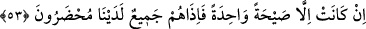

şâhidler huzurunda rezil ve rüsvay oldukları vakit kabir azabı onun yanında uyku gibi
olur. Bunun üzerine “Eyvah, eyvah! Bizi kabrimizden kim kaldırdı?” derler. Çünkü
kabir azabı sadece rûhânîdir. İmam Âzam (r.h.) kabir sualinin ruh ve cesed beraber
olacağına dâir sözüyle şehidlerin ruhları gibi ruhlarla bedenlerin birbiriyle çok alâkalı
olduğunu açıklar. Bu yüzden şehidler diri sayılmışlardır. Kıyamet azabı ise hem cismânî
hem de rûhânîdir. Yalnız rûhânî olan kabir azabından daha şiddetlidir.
“Bu, Rahmân’ın vaadettiğidir. Peygamberler gerçekten doğru söylemişler!”
derler.” Yani, bu yeniden diriltilme, Rahmân’ın dünyada vaadettiği bir şeydir. Siz ise
inkâr ederek “Bu tehdid ne zaman?” dediniz. Onun hak olması konusunda peygamberler
doğru söylediler.
Bu söz, melekler ya da mü’minler tarafından verilen bir cevaptır. Bu söz ile kâfirlere
inkârlarını hatırlatmak, bundan dolayı onları kınamak, onlar için asıl önemli olanın
onların kendilerini kimin uyandırıp dirilttiğini sormak değil, bu diriltmenin kendisini
sormak olduğuna dikkat çekilmek üzere onların soru tarzından farklı cevap verilmiştir.
Çünkü onlar diriltilmeyi değil, diriltenin kim olduğunu sordular.
Sanki melekler ve mü’minler onlara şöyle dediler: “Kitaplarında bunu size vaadeden
Rahmân sizi diriltti. O size peygamberler gönderdi. Bu konuda onlar size doğru
söylediler. Bu sizin zannettiğiniz gibi bir uykudan uyanış değil ki sizi kimin
uyandırdığını soruyorsunuz. Bu ancak korkunç ve dehşetli olan en büyük diriltilmedir.
53. Olan müthiş bir sesten ibarettir. Bunun üzerine onların hepsi hemen
huzurumuzda hazır bulunurlar.
Bahse konu “Olan” ikinci üfürüş İsrafil (a.s.)’ın sûra üfürmesinden meydana gelen
“müthiş bir sesten ibarettir.”
Denilir ki bu diriltilme sayhası Beytü’l-Makdis’teki bir kayanın üzerinden İsrafil
(a.s.)’ın: “Ey çürüyen kemikler, birbirinden ayrılan mafsallar, paramparça olan
organlar, darmadağın olan saçlar! Sizi yaratıp size sûret ve şekil veren Allah Teâlâ
aranızda hüküm vermek için size toplanmanızı emrediyor. Haydi toplanın. Mahşer ve
arasat meydanına bütün zâlim ve zorbalardan daha güçlü olan Allah’ın huzuruna gelin.”
diye seslenmesidir.
Fakir (Bursevî) der ki: Zâhir olan şu ki İsrâfil (a.s.)’ın bu konuşması sûra üfürmekten
başka bir şey değildir. Buna göre ikisinden birini murâd etmenin diğerini murâd etmek
olması da mümkündür. Ya da bu söz ve sûra üfleme birlikte olacak şekilde bu sözün
sûra üfürme esnâsında söylenmesi de mümkündür. Çünkü onun alışılan şekilde konuşma
zorunluluğu yoktur ki ikisi arasında çelişki meydana gelsin.
“Bunun üzerine onların hepsi hemen” göz açıp kapatıncaya kadar dahi